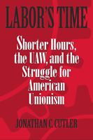

What ever happened to labor's fight for a shorter workweek?
What ever happened to labor's fight for a shorter workweek?


 What ever happened to labor's fight for a shorter workweek?
What ever happened to labor's fight for a shorter workweek?

|  |
Labor's TimeShorter Hours, the UAW, and the Struggle for American UnionismJonathan Cutlerpaper EAN: 978-1-59213-247-8 (ISBN: 1-59213-247-2) |
"This is, quite simply, the most brilliant and original study of American labor to appear in a generation. Jonathan Cutler shows that the ascendancy of labor 'statesmen' and their ideology of political and industrial responsibility has meant not just the death of the shorter-hours movement, but also the end of the labor movement as a dynamic force in American life. Introducing entirely new conceptions of work, power, desire, and freedom, Labor's Time is a monumental achievement."
—Thaddeus Russell, Barnard College, and author of Out of the Jungle: Jimmy Hoffa and the Remaking of the American Working Class
The movement for a shorter workweek that once defined the labor movement in the United States was largely displaced by the new corporatist structure of organized labor in the post-New Deal era. Labor's Time examines the changes that occurred within organized labor and traces their influence on the decline of the shorter hours movement. Focusing on the internal union politics of the influential United Automobile Workers and Local 600, its chapter at Henry Ford's massive River Rouge factory, Jonathan Cutler demonstrates how an all-but-forgotten interracial movement for a shorter workweek during the 1950s and 1960s became a casualty of an increasingly top-heavy union bureaucracy that lost touch with the desires, fears, and aspirations of rank and file workers and dug its own grave in the process.
Jonathan Cutler examines the political context in which the shorter hours movement emerged within Local 600 in the 1940s, then chronicles the attempts by Walter Reuther, the head of the UAW, to suppress it. Cutler also reviews the role the Communist Party played in the controversy. Finally, he documents the UAW response to rank and file pressure for a shorter workweek, and how the local's own organizational flaws allowed Reuther and the national union to wrest control from the dissidents.
Fresh and boldly written, Labor's Time recreates a moment when unions—as a movement, not as an amalgam of leaders—could have transformed the landscape of work in the United States.
Excerpt available at www.temple.edu/tempress
"The fight for shorter hours! Now there's a lost bit of American history that is in sore need of remembrance. Jonathan Cutler's perceptive and thoroughly researched history of one key part of that struggle deserves to be read and debated so that the fight against 'overwork' is once more near the top of America's social agenda."
—Nelson Lichtenstein, author of Labor's War at Home: The CIO in World War II
"Jonathan Cutler's book is essential reading for those concerned about the fate of America's overworked and underpaid workers. Labor's Time is an engaging and well-researched account of union struggles over work hours. At a moment when many employers are demanding longer workdays and 'shaving' hours from employees' time sheets, Cutler's book makes an important scholarly intervention into an issue whose history has profound implications for the present."
—Thomas J. Sugrue, Bicentennial Class of 1940 Professor of History and Sociology, University of Pennsylvania
"This is a very readable, engaging account of a critical moment in labor history."
—Industrial Worker
"In telling the story, Cutler raises bigger questions about democracy, power, and direction for the labor movement. His book is fascinating and informative, and it made me think."
—Against The Current
"Cutler is an expert guide... [his] enormous research into the intricacies of the internecine battles with the UAW over the thirty-hour workweek is important in its own right. His insightful and deeply researched study into the struggles compose the majority of his book."
—Working USA
"[B]rings a welcome focus to a very interesting issue in economic history... the author is quite good at establishing the political climate within the union and Local 600 where much of the story takes place."
—EH.Net
"Jonathan Cutler's spirited history of the fight for shorter hours in the auto industry offers us a combative narrative.... my hat is off to him for coming closer than any other scholar in tracing the fortunes of the anti-Reuther left-communist, opportunist, syndicalist, African American-what for many years proclaimed itself the largest local union in the world."
—Dissent
"Jonathan Cutler has written an excellent, tightly focused study of the internecine power struggles between the Walter Reuther-led United Auto Workers (UAW) and Local 600 at the River Rouge Ford complex outside Detroit."
—The Journal of American History
"[A] worthy read... Cutler has contributed an important piece of work on an issue that, though largely ignored, sits at the core of the most important developments in postwar labor."
—Labor History
"Cutler's book goes beyond a detailed account of the shorter hours movement�it touches on the beginning of the end of organized labor's power in the United States, the racial politics of labor, cold war politics, and social policy discourse.... He does an outstanding job researching the details of the movement... I would recommend using this book to supplement a more general set of readings in a graduate seminar on labor unions, labor history, or social movements."
—Contemporary Sociology
"This story is extraordinarily important, with implications far beyond the internal politics of a single union. For its detailed explication of Reuther's opposition to shop-floor militancy, Labor's Time should be required reading for all students of the so-called labor-management accord of the postwar period. Moreover, Cutler expertly explores the place of Cold War politics within Reuther's UAW. ...Labor's Time is an important new work in U.S. labor studies."
—Labor Studies
"[A] valuable addition to reading lists for graduate seminars in the areas of work and labor, political sociology, and American Studies....fascinating."
—The American Journal of Sociology
"[A] closely researched study of the United Auto Workers Local 600 at the Ford River Rouge plant in Detroit and that local�s battle with UAW president Walter Reuther over the 30-hour workweek. This book reconstructs a struggle for economic change and union power that raged from WWII into the 1960s � and was forgotten soon after that. Cutler�s book is a rich and meticulous reconstruction of the struggle � centered in Local 600 and other �dissident� UAW locals � to make the 30-hour workweek a top priority for the autoworker�s post-war contractual negotiations.... Cutler is thorough and insightful in reconstructing the multi-layered debates swirling around and through the Rouge and its Local 600."
—Social Forces
Acknowledgments
Introduction
1. Thirty Hours Work for Forty Hours' Pay
2. The Most Dangerous Man in Detroit
3. The Collapse of Communism
4. Future Perfect
5. False Promises
6. Retreat and Defeat
Conclusion
Notes
Bibliography
Index
 | Jonathan Cutler is Assistant Professor in the Department of Sociology at Wesleyan University and co-editor of Post-Work. |
Labor Studies and Work
History
Sociology
Labor in Crisis, edited by Stanley Aronowitz.
The hope for a revived progressive movement in American politics and culture depends to a large extent on the possibility of a revived labor movement. This series will stimulate debate and discussion about the state of the American labor movement and its relation to the future of America by publishing short, provocative books that offer varying analyses and prescriptions for labor's revival as well as diverse assessments of its prospects. Books in the series will be relevant to a vision of the labor movement that presupposes movements and people who care about the chances of more equality, more democratic participation in the institutions of political and social life, and more power for those traditionally excluded from economic and political decision making.
© 2015 Temple University. All Rights Reserved. This page: http://www.temple.edu/tempress/titles/1614_reg.html.